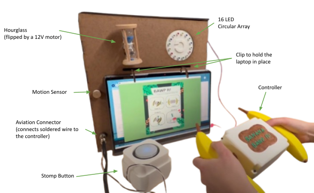
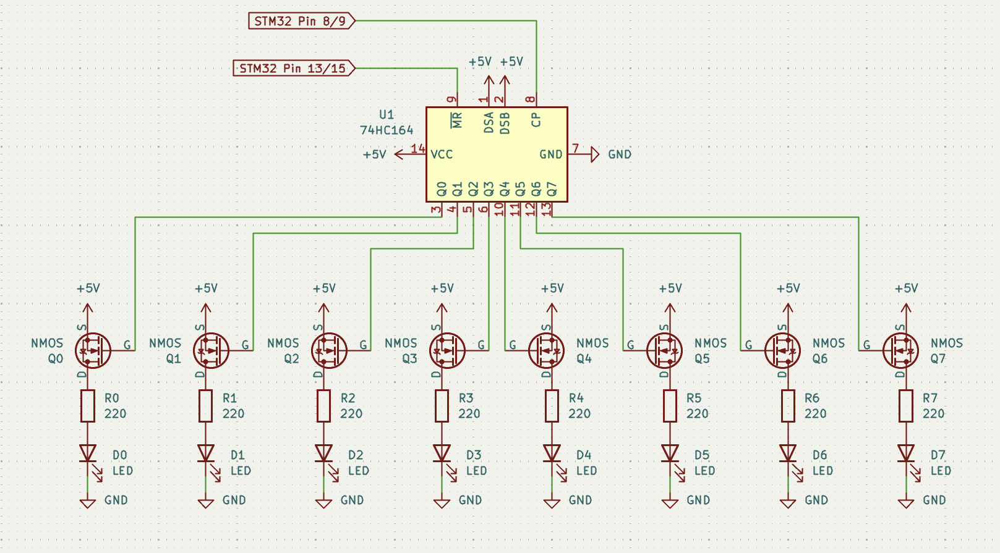
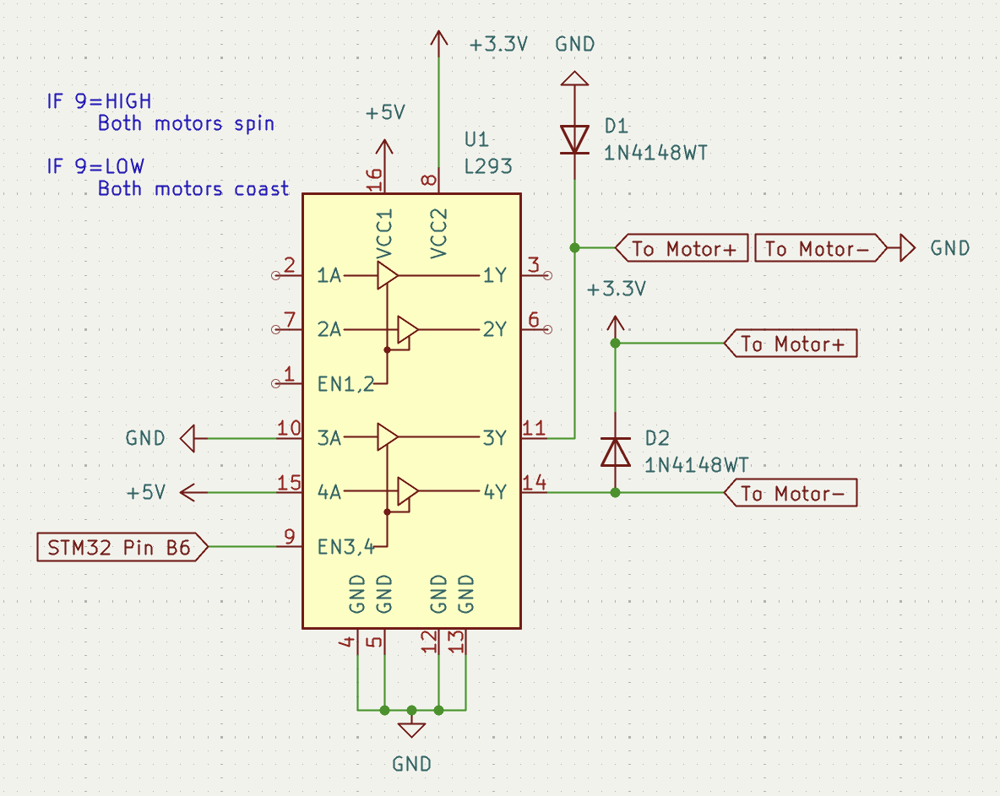
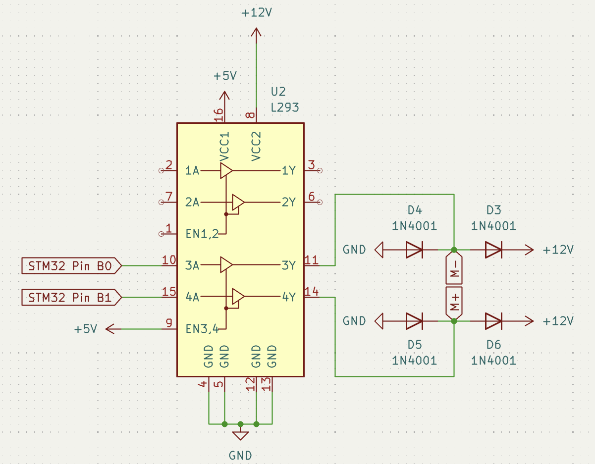
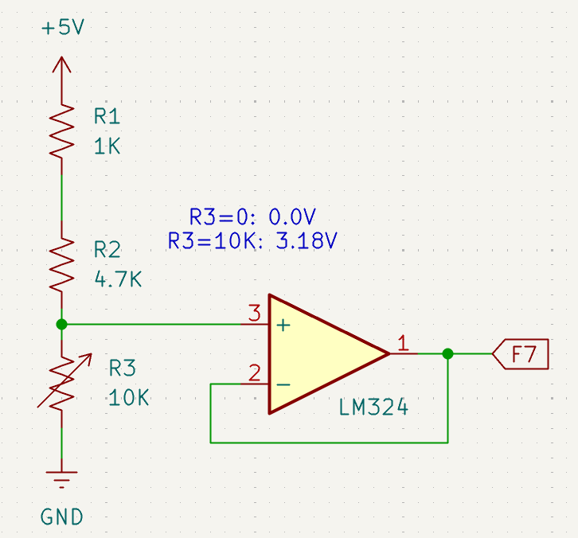

Banana Bawp It
The goal of this project was to develop an arcade game applying different mechatronics concepts such as circuit design, microcontrollers, and embedded C. We chose to create a jungle themed game called Banana Bawp-It! (no relation Hasbro's Bop It!) that would allow the user to interact with the controller in different ways and race against the clock to complete the most amount of tasks in a 30 second span. An additional challenge we undertook was making the game accessible to those with visual impairments. This served as the final project for our class 16-878 Advanced Mechatronics Design in the Robotics Institute at Carnegie Mellon University.

Mechatronic System Design
My main individual undertaking was the entire electronic design of the system. The major components that included were: unidirectional and bidirectional motor drivers, LED light array, and potentiometer circuit. The main challenge in this circuit design is that most systems had to be created from only basic components, barring a few ICs allowed such as op amps, comparators, and H-bridges.
LED Array
One key feature is visual feedback for the potentiometer output. My solution was an LED array that would light 16 LEDs in a circular shape as the potentiometer value increased. This is accomplished by employing two shift registers, each controlling eight LEDs. As the potentiometer turns, the output voltage value swings between 3.3V and 0V and that indicates to the microcontroller how many lights to turn on. If the potentiometer turns in the wrong direction, LEDs begin to turn off to indicate reversal of progress. When turning on each individual LED, the shift register gets a bit passed to pin 2, DSB, and the clock pin to trigger a bit shift. In order to turn LEDs off when the user turns the potentiometer backwards (to 0V), the MCU rapidly resets the shift register and shifts in the desired amount of bits. This happens so quickly it is indistinguishable to the human eye.


Unidirectional Motor Driver
This motor driver was used to control our vibration motors in the handheld controller to give users non-visual feedback that a task had successfully been completed. This motor controller is built around an L293B quadruple high-current half-H driver. The open loop controller is designed in such a way that we can turn on and off both motors using a single input from the microcontroller at pin 9, chip enable 2, on the L293B. Although the microcontroller is capable of supplying the required 3.3V to power the motors, I elected to use a Pololu 2595 4-channel logic level shifter board to step down the voltage from 5V to 3.3V to avoid potentially damaging the microcontroller by directly pulling current from it. This level shifter was also used to supply 3.3V to other components in the system.

Bidirectional Motor Driver
The closed loop motor controller is slightly more complex. Using two inputs from the motor controller instead of one, we are able to achieve bidirectional control over our Pololu 4860 12V DC motor. Bidirectional control is key because we are employing a PID controller to ensure that the hourglass remains vertical during gameplay to achieve accurate timing.

Potentiometer Circuit
The potentiometer is used to detect an analog signal from the angle one of the handles is twisted. The system is set up in the configuration of a voltage divider with the potentiometer on the ground side along with an LM324 op amp to make the signal go high when max resistance is reached. Since we were only allowed either 5V or 12V input, this setup also keeps the output voltage between the 3.3V maximum input voltage of the microcontroller. This is also demonstrated in the gif above in conjunction with the LED array circuit.
